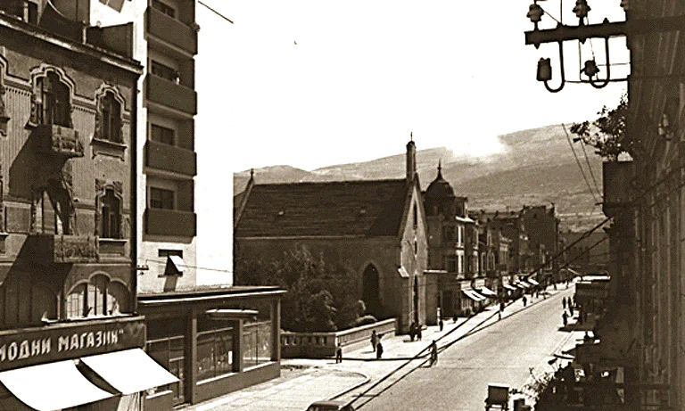

Aziz Kurtarıcı (Sveti Spas)
- Yapım
- UFUŽ ve Prag Belgesel Filmi
- Senaryo ve yönetmen
- Slavko Janevski ve EMAN CANERA
- Yıl
- 1959
- Süre
- 00:31

Üsküp'ün güneybatısında, Gorno Nerezi köyünün yukarısında, Komnenos ailesinden Aleksios Komnenos tarafından 1164'te yaptırılan Aziz Panteleimon kilisesi. Narteksten naosa açılan kapının üzerindeki mermer lentoda yazıt bugüne dek korunmuştur. Sekizgen merkezi kubbesi ve köşelerde dört küçük kare kubbesi olan, taş ve tuğladan tek nefli bir yapıdır. Yalnızca Üsküp'ün değil Makedonya'nın en eski Bizans anıtıdır. Yapıldıktan hemen sonra boyandı; 15., 16. ve 19. yüzyıllarda yeniden boyandı, ama ilk freskler onu birinci derecede önemli bir anıt yapar.


1835'te yapılan Meryem Ana kilisesi Vardar'ın sol kıyısındaydı. Mekân düzenlemesinde Barok ve çağdaş kentsel öğelerle Bizans etkileri gösterir. İkinci Dünya Savaşı sırasında yandı; o zamana kadar şehrin katedral kilisesiydi. Ondan sonra katedral Aziz Dimitri oldu. (1920'ler)

Meryem Ana Kilisesi - 1920'ler.

Meryem Ana kilisesinin avlusunda Vidovdan bayramında halkın toplanması - 1919.

Aziz Dimitri kilisesi 18. yüzyılda Orta Çağ'daki Aziz Dimitri kilisesinin yerine yapıldı. 1886-94'te onarıldı, duvar ve çan kulesi o zaman eklendi. 1980'e kadar katedral kiliseydi. Vardar'ın sol kıyısında Taş Köprü'nün yakınındadır (1920'ler).

Aziz Dimitri Kilisesi - 1930'lar.

Üsküp Metropolitliği. Vardar'ın sol kıyısındaki rıhtımdaydı - 1920'ler.

Biçimlenmekte olan ana cadde (bugünkü "Makedonija" Caddesi, bugünkü Üsküp Şehir Müzesi'nden Taş Köprü'ye uzanır). Sağda Avusturya hükümetinin bağışıyla yapılan Gotik Katolik kilisesi (Aziz Marta Evi), solda birkaç bina. Caddenin Taş Köprü yanındaki kısmı, Kosova Ovası'na gitmeden önce Üsküp'ü ziyarete gelen Sultan V. Mehmed Reşad geçebilsin diye 1911'de döşendi.

20. yüzyılın başında inşa edilen Gotik tarzdaki Katolik kilisesi - 1920'ler.

Meydana doğru ana cadde. Ön planda Katolik kilisesi var. (1950'ler)

Tren garına (bugünkü Üsküp Şehir Müzesi) doğru ana cadde. Solda Katolik kilisesi görülüyor. (1950'ler)

Aziz Kurtarıcı kilisesinin çan kulesi - 1910'lar.

Aziz Kurtarıcı kilisesi Üsküp Kalesi'nin karşısındadır. 17. yüzyılın sonunda yapılan, yarısı toprağa gömülü küçük bir kilisedir. Galičnikli Frčkovski kardeşlerin - usta Petre, Marko ve Makarija; ikonostasın sağ tarafında tasvir edilmişlerdir - ahşaba derin oymayla işlediği en eski ve en güzel sunak perdelerinden biriyle ünlüdür. İkonostas 1814 - 1824'te yapıldı. Fotoğraf 1920'lerde çekildi.

Aziz Kurtarıcı kilisesinin avlusu. Fotoğraf 1930'larda çekildi.

Üsküp panoraması. Ön planda aşağıda Aziz Kurtarıcı kilisesi var - 1970'ler.

Aziz Yorgi Kilisesi - "Çair" mahallesinde - 1930'lar.

"Aziz Konstantin ve Aziz Helena" Kilisesi. - 1930'lar.

Balkan Savaşları'ndan Zafer Tapınağı ve askeri mezarlık. 1928'de kutsandı. (1930'lar)

 Su kemeri4 kartpostal
Su kemeri4 kartpostal Kale30 kartpostal
Kale30 kartpostal Köprüler60 kartpostal
Köprüler60 kartpostal Rıhtım58 kartpostal
Rıhtım58 kartpostal Meydan46 kartpostal
Meydan46 kartpostal Binalar66 kartpostal
Binalar66 kartpostal Hristiyan kiliseleri19 kartpostal
Hristiyan kiliseleri19 kartpostal İslami yapılar33 kartpostal
İslami yapılar33 kartpostal Subaylar Evi29 kartpostal
Subaylar Evi29 kartpostal Tiyatro28 kartpostal
Tiyatro28 kartpostal Tren garı13 kartpostal
Tren garı13 kartpostal Okullar36 kartpostal
Okullar36 kartpostal Parklar12 kartpostal
Parklar12 kartpostal Pazarlar18 kartpostal
Pazarlar18 kartpostal Sokaklar38 kartpostal
Sokaklar38 kartpostal Panorama I60 kartpostal
Panorama I60 kartpostal Panorama II30 kartpostal
Panorama II30 kartpostal Kolajlar55 kartpostal
Kolajlar55 kartpostal Seller9 kartpostal
Seller9 kartpostal Deprem27 kartpostal
Deprem27 kartpostal Üsküp 200026 kartpostal
Üsküp 200026 kartpostal